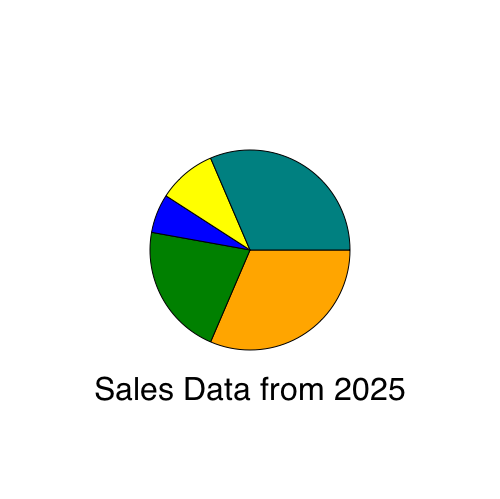

The source to this hands on project, and all projects in this book, can be found here.
Note that in this chapter we will load code directly from the local hard drive rather than through a webserver. You may need to disable security in Chrome during development because of this. If you are having issues with Chrome loading images or other files directly from disk, try adding some security flags to the command line:
On Mac OS X this would be
/Applications/Google\ Chrome.app/Contents/MacOS/Google\ Chrome --allow-file-access-from-files --disable-web-securityOn Linux this would be
chromium-browser --disable-web-securityOn Windows this would be
chrome.exe --disable-web-securityAlternatively, you can load the pages through a local webserver.
In this chapter we will graph some data by drawing a custom chart. It will show you basic drawing of lines, shapes, and text; then we will make a pie chart with gradient.
Create A New Page
Start by creating a new text file called barchart.html and type this in:
<html>
<body>
<canvas width="500" height="500" id="canvas"></canvas>
<script>
var data = [ 16, 68, 20, 30, 54 ];
</script>
</body>
</html>The page above contains a canvas and script element. The canvas element is the actual on-screen rectangle where the content will be drawn. The width and height determine how big it will be. The Canvas element is a block level DOM element similar to a DIV so you can style it or position it just like anything else in your page.
The data variable in the script tag is a set of data points that we will draw in the bar chart.
Now lets get a reference to the canvas and fill the background with gray. Add this to the script tag after the data variable.
//get a reference to the canvas
var canvas = document.getElementById('canvas');
//get a reference to the drawing context
var c = canvas.getContext('2d');
//draw
c.fillStyle = "gray";
c.fillRect(0,0,500,500);Add Data
Now you can draw some data. Do this by looping over the data array. For each data point fill in a rectangle with the x determined by the array index and the height determined by the data value.
//draw data
c.fillStyle = "blue";
for(var i=0; i<data.length; i++) {
var dp = data[i];
c.fillRect(25 + i*100, 30, 50, dp*5);
}Now load this page up in your webbrowser. It should look like this:

screenshot plain data bars
The first problem is that the bars are coming down from the top instead of the bottom. Remember that the y axis is 0 at the top and increases as you go down. To make the bars come up from the bottom change the y value to be calculated as the height of the canvas (500) minus the height of the bar (dp*5) and then subtract off an extra 30 to make it fit.
//draw data
c.fillStyle = "blue";
for(var i=0; i<data.length; i++) {
var dp = data[i];
c.fillRect(25 + i*100, 500-dp*5 - 30 , 50, dp*5);
}
Now it looks like this:
screenshot fixed orientation
Axis Lines and Labels
Now add some axis lines by stroking a path starting at the top, down the left side, and across the bottom.
//draw axis lines
c.fillStyle = "black";
c.lineWidth = 2.0;
c.beginPath();
c.moveTo(30,10);
c.lineTo(30,460);
c.lineTo(490,460);
c.stroke();Now add the value label and tickmark down the left side.
//draw text and vertical lines
c.fillStyle = "black";
for(var i=0; i<6; i++) {
c.fillText((5-i)*20 + "",4, i*80+60);
c.beginPath();
c.moveTo(25,i*80+60);
c.lineTo(30,i*80+60);
c.stroke();
}And finally add labels across the bottom for the first five months of the year
var labels = ["JAN","FEB","MAR","APR","MAY"];
//draw horiz text
for(var i=0; i<5; i++) {
c.fillText(labels[i], 50+ i*100, 475);
}The result looks like this:

screenshot chart with axis lines and labels
Not bad but there are a few tweaks we should make. Let's change the background to white so it doesn't seem to dreary, then adjust the position of the bars slightly so they actually start at 0,0.
//draw background
c.fillStyle = "white";
c.fillRect(0,0,500,500);
//draw data
c.fillStyle = "blue";
for(var i=0; i<data.length; i++) {
var dp = data[i];
c.fillRect(40 + i*100, 460-dp*5 , 50, dp*5);
}Now the final chart looks like this:

screenshot prettier barchart
Piechart
Now lets take the same data and draw it as a piechart instead. The code is very similar.
Create a new document called piechart.html containing this:
<html>
<body>
<canvas width="500" height="500" id="canvas"></canvas>
<script>
//initialize data set
var data = [ 100, 68, 20, 30, 100 ];
var canvas = document.getElementById('canvas');
var c = canvas.getContext('2d');
//draw background
c.fillStyle = "white";
c.fillRect(0,0,500,500);
</script>
</body>
</html>Now add a list of colors (one for each data point) and calculate the total value of all of the data.
//a list of colors
var colors = [ "orange", "green", "blue", "yellow", "teal"];
//calculate total of all data
var total = 0;
for(var i=0; i<data.length; i++) {
total += data[i];
}Drawing the actual pie slices seems complicated but it's actually pretty easy. For each slice start at the center of the circle (250,250) then draw an arc from the previous angle to the new angle. The angle is the portion of the pie this data point represents, converted into radians. The previous angle is the angle from the previous time through the loop (starting at 0). The arc is centered at 250,250 and has a radius of 100. Then draw a line back to the center and fill & stroke the shape.
//draw pie data
var prevAngle = 0;
for(var i=0; i<data.length; i++) {
//fraction that this pieslice represents
var fraction = data[i]/total;
//calc starting angle
var angle = prevAngle + fraction*Math.PI*2;
//draw the pie slice
c.fillStyle = colors[i];
//create a path
c.beginPath();
c.moveTo(250,250);
c.arc(250,250, 100, prevAngle, angle, false);
c.lineTo(250,250);
//fill it
c.fill();
//stroke it
c.strokeStyle = "black";
c.stroke();
//update for next time through the loop
prevAngle = angle;
}Now finally add some text at below the graph. To center the text you must first calculate the width of the text:
//draw centered text
c.fillStyle = "black";
c.font = "24pt sans-serif";
var text = "Sales Data from 2025";
var metrics = c.measureText(text);
c.fillText(text, 250-metrics.width/2, 400);
This is what it will look like:

Add Some Gradients
To make the chart look a little bit snazzier you can fill each slice with a radial gradient like this:
//draw the pie slice
//c.fillStyle = colors[i];
//fill with a radial gradient
var grad = c.createRadialGradient( 250,250, 10, 250,250, 100);
grad.addColorStop(0,"white");
grad.addColorStop(1,colors[i]);
c.fillStyle = grad;The gradient fills the slice going from white at the center to the color at the edge, adding a bit more depth to the chart. It should look like this:

To make this chart more useful here are a few more improvements you could try making:
- Add data and change the math so that the barchart has 12 full months of data
- Build a line chart that draws each data point as a circle, then draw a multi-segment line to connect all of the circles.
- Make the barchart prettier with gradient fills, rounded corners, or black outlines.
- Draw a label on each slice of the pie